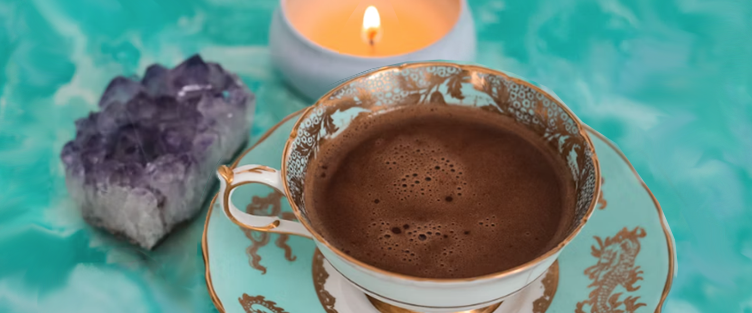

English Breakfast Tea
Full-bodied, robust, and strong flavor.

Russian Caravan Tea
Mostly consists of at least two tea types.

Söderblandning Tea
Black tea blended with fruit and flowers.
Full-bodied, robust, and strong flavor.
Mostly consists of at least two tea types.
Black tea blended with fruit and flowers.
Large Modal Example
The delicate flavor of white tea is often described as light, floral, and slightly sweet. It lacks the strong and robust flavors that are commonly associated with black or green tea. Instead, white tea offers a more subtle and refined taste experience, making it a popular choice among tea enthusiasts who appreciate its delicate and nuanced flavors.